Full Site Editing
Built entirely in the block editor: theme.json for styling, native block patterns for layout, no custom PHP templates.
- Lines of code
- 7012
- Page weight
- 341KB
- DOM nodes
- 576
Same design, three stacks
The same page — same content, same design tokens — built three ways: Full Site Editing, Elementor, and a classic ACF theme. This site compares how each build turned out.
Same design, same content. Different WordPress approach under the hood.
Built entirely in the block editor: theme.json for styling, native block patterns for layout, no custom PHP templates.
Built with Elementor’s page builder, styled with an Elementor kit generated from the same design tokens.
A classic theme: hand-written PHP templates, with ACF fields for anything an editor needs to change.
Variables leave Figma once, as a tokens file. From there each build takes its own route into the values it will actually use.
Figma variables
The same section, opened for editing in each of the three builds.
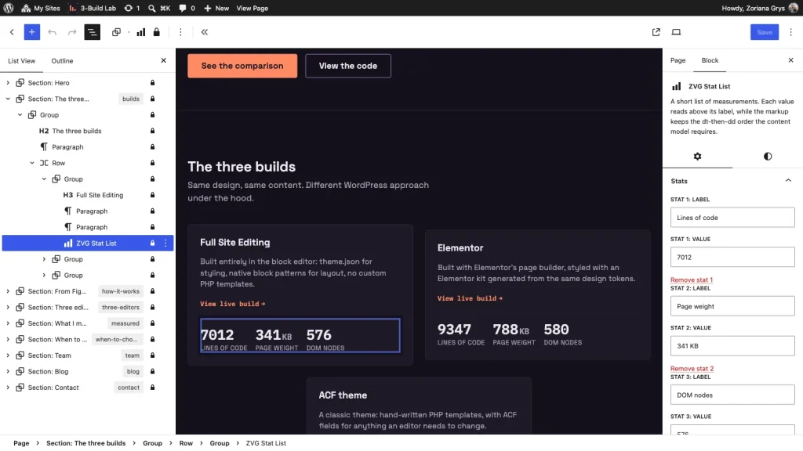
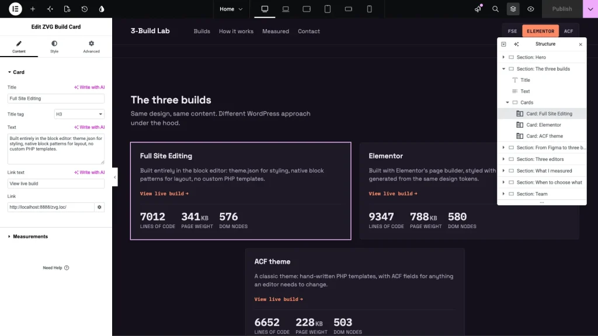
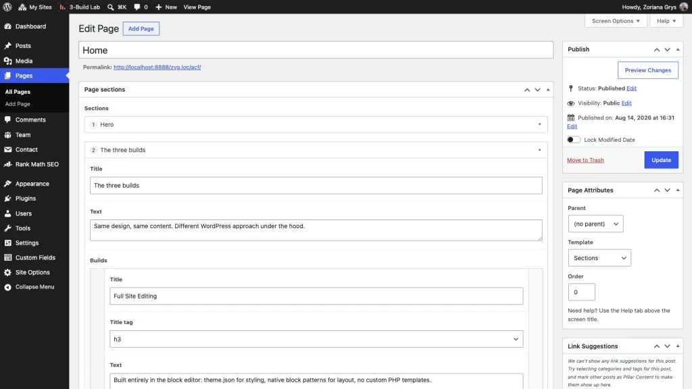
The same four checks, run against each finished build.
| FSE | Elementor | ACF theme | |
|---|---|---|---|
| Lines of code | FSE 7012 | Elementor 9347 | ACF theme 6652 |
| Page weight | FSE 341 KB | Elementor 788 KB | ACF theme 228 KB |
| DOM nodes | FSE 576 | Elementor 580 | ACF theme 503 |
| Lighthouse mobile | FSE 100 | Elementor 99 | ACF theme 100 |
A short questionnaire — three questions, then one of the three builds is suggested.
A demonstration of the same custom post type rendered in all three builds.
Fictional profiles — this section demonstrates a custom post type.
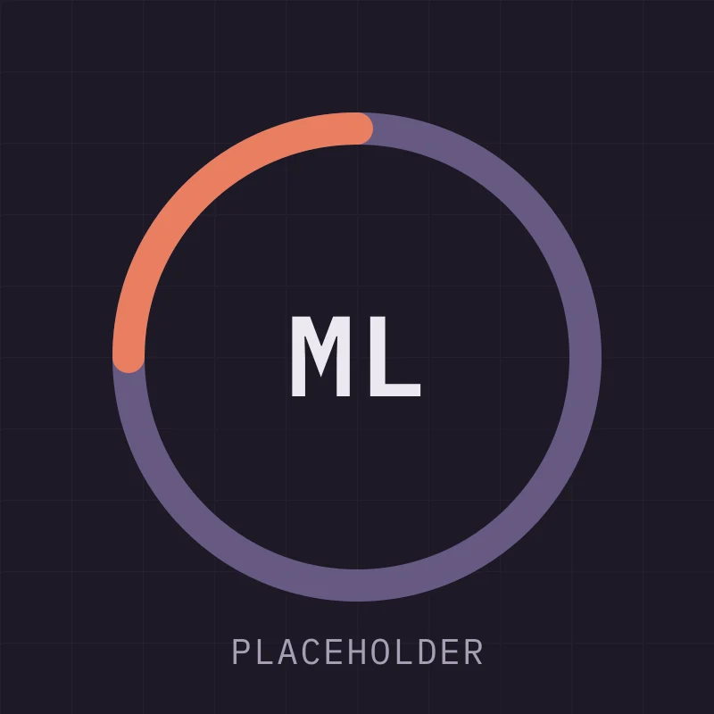
Content strategist
Decides what belongs on a page before anyone opens an editor.
Works on the order of sections, not their styling. Most of the argument on this page — one design, three builds, then the numbers — is a content decision, not a design one.
Writes the section briefs that the three builds are measured against. If a section reads the same in all three, it was not worth building three times.
Fictional profile. This card demonstrates a custom post type with a photo, a role and two lengths of bio.
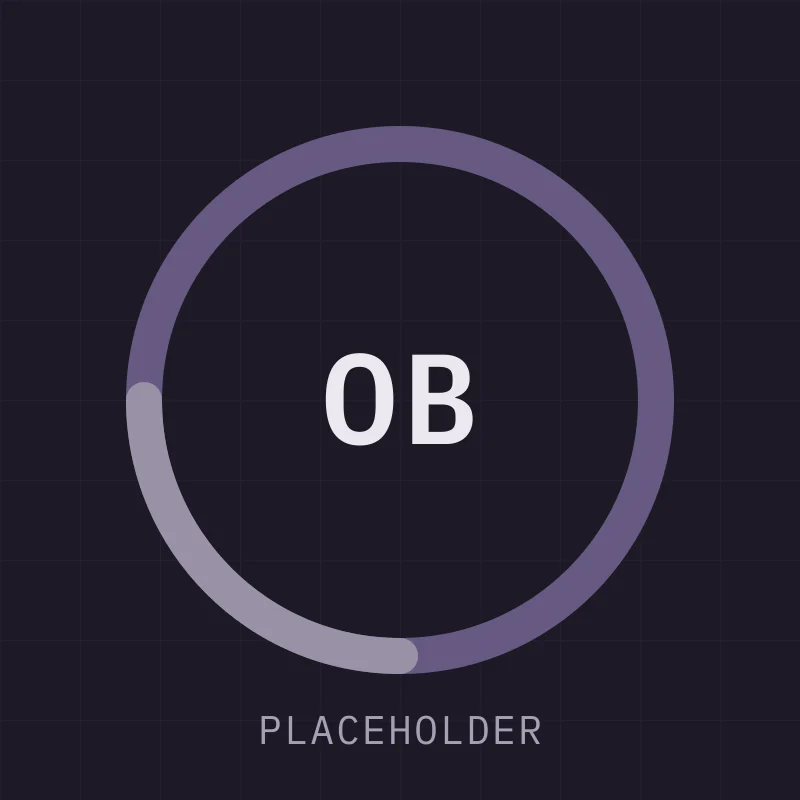
Front-end developer
Turns the token file into templates that survive editing.
Builds the parts that have to stay identical between the three versions: the version switcher, the questionnaire, this dialog. Anything a visitor can click is written once and reused.
Spends most of the time on the difference between “works” and “still works after an editor changes it”.
Fictional profile. This card demonstrates a custom post type with a photo, a role and two lengths of bio.
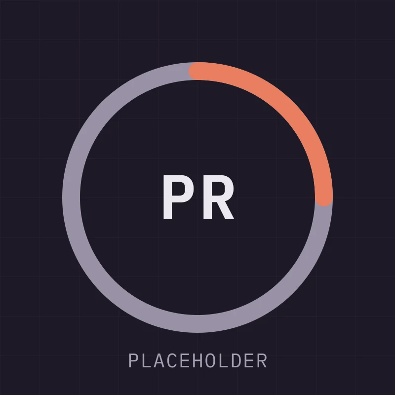
Design systems lead
Keeps the same scale usable across three very different tools.
Owns tokens.json and the scripts that read it. When a colour changes it reaches theme.json, the Elementor kit, the SCSS variables and Figma without anyone retyping a hex.
The interesting part is what does not survive translation: fluid type has no equivalent in Figma variables, and letter spacing in em cannot be expressed in pixels at all.
Fictional profile. This card demonstrates a custom post type with a photo, a role and two lengths of bio.
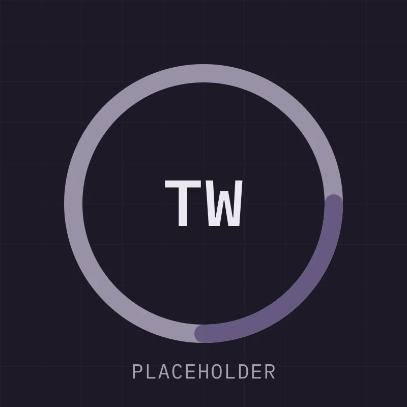
WordPress engineer
Handles migrations, custom fields and the parts editors never see.
Sets up the network so the three builds share one set of assets and one contact endpoint, instead of three copies that drift apart.
Also the person who notices that the same 1px border was hardcoded in 423 places before anyone gave it a token.
Fictional profile. This card demonstrates a custom post type with a photo, a role and two lengths of bio.
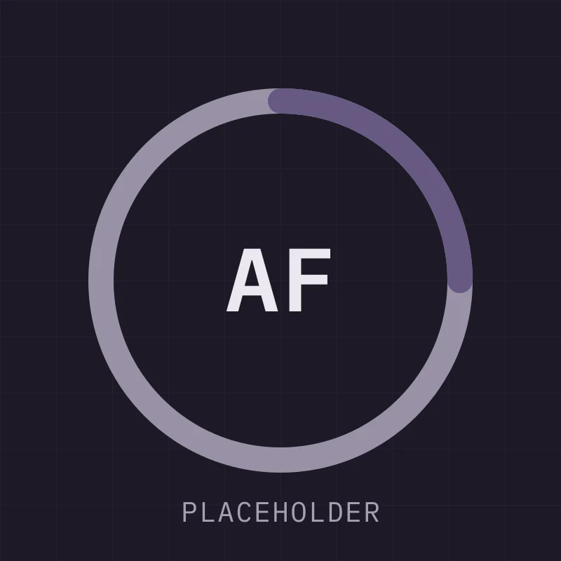
Accessibility specialist
Tests each build with a keyboard before it is called finished.
Checks the things that are easy to lose in a page builder: focus order, focus visibility, contrast on anything that identifies a control, and whether a state is communicated by more than colour.
Signs off on the questionnaire only because the selected option carries a label as well as an accent border.
Fictional profile. This card demonstrates a custom post type with a photo, a role and two lengths of bio.
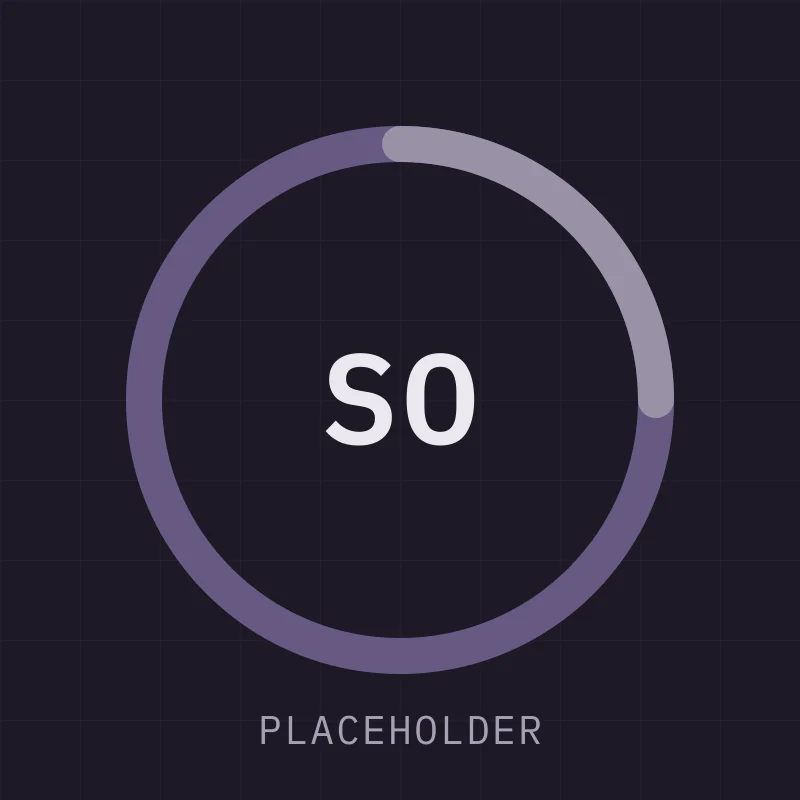
Project lead
Decides which of the three approaches a project actually needs.
Reads the comparison table and asks the question the table cannot answer: who maintains this in a year, and with what budget.
Usually recommends the least interesting option, which is the point of the questionnaire above.
Fictional profile. This card demonstrates a custom post type with a photo, a role and two lengths of bio.
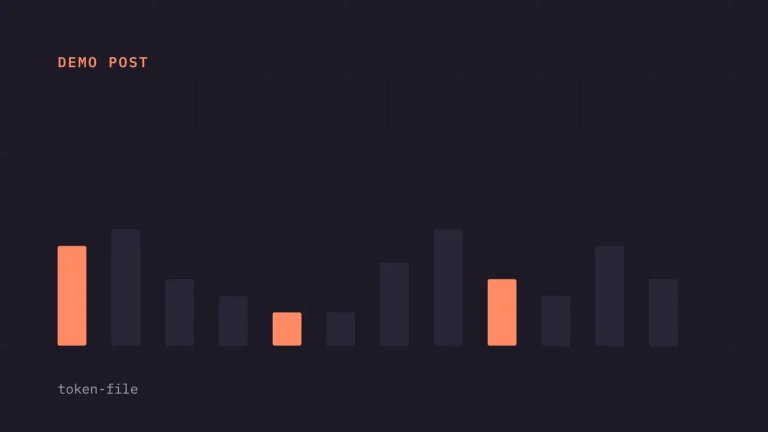
Notes on the format that survived translation into theme.json, an Elementor kit and plain SCSS without hand-editing.
Read more : Writing a token file three tools can read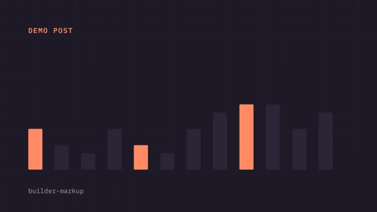
Counting the wrappers on an identical layout, and deciding which of them actually matter in practice.
Read more : What page builders add to your markup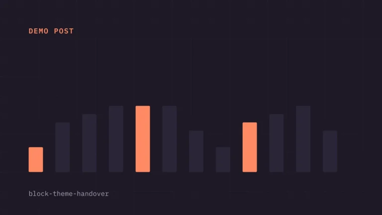
Which controls to lock down before launch, and what editors reliably break when you leave them open.
Read more : Handing a block theme to a clientQuestions about the experiment, or work enquiries — whichever’s easier for you.